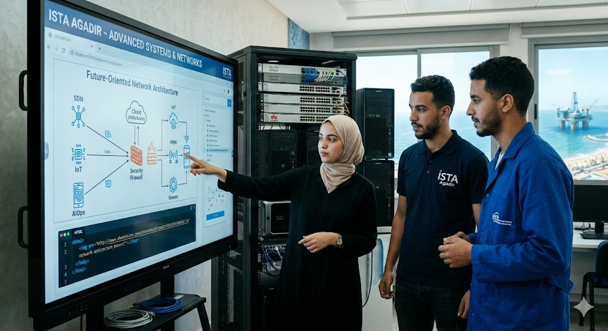

Hi , I am MOHMED AMAGAR
Future-oriented network and systems specialist
Core Competencies :
As a specialist in this field, your expertise likely spans the following technical pillars:
Advanced Networking: Designing and managing robust architectures using Cisco or Huawei protocols, focusing on both IPv4 and the transition to IPv6.
Systems Administration: Managing server environments (Windows Server, Linux/Unix) and mastering virtualization via tools like VMware or Hyper-V.
Cybersecurity Integration: Implementing firewalls, VPNs, and intrusion detection systems (IDS) as a "security-first" mindset.
Cloud & Automation: Moving beyond manual configuration toward Infrastructure as Code (IaC) and cloud-hybrid environments (AWS/Azure).
What "Future-oriented" Means in this Context
In the rapidly evolving tech scene of Morocco—especially with the Souss-Massa region becoming a hub for offshoring and digital transformation—being "future-oriented" means:
1 - SDN (Software-Defined Networking): Understanding that the future of hardware is software-controlled.
2 - IoT Readiness: Preparing networks to handle thousands of smart devices, which is crucial for modernizing Agadir's agriculture and tourism sectors.
3 - Artificial Intelligence for IT Operations (AIOps): Using AI to predict network failures before they happen.
4 - Green IT: Optimizing data centers and server rooms for energy efficiency.
